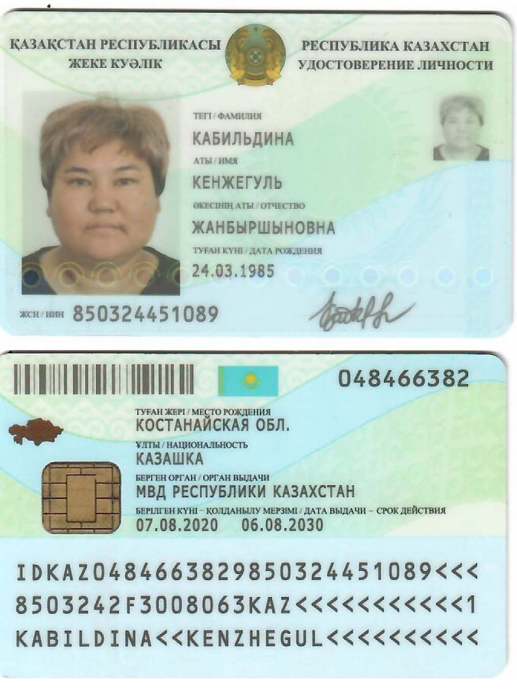
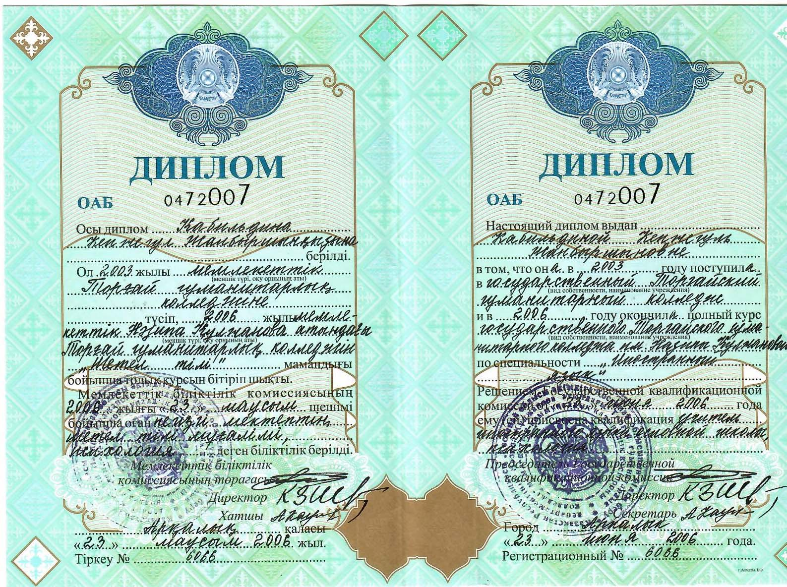

1985 жылы 24 наурызда Жангелді ауданы Саға ауылында көп балалы отбасында дүниеге келгенмін. Мектеп табалдырығын 1992 жылы аттап, М. Дулатов атындағы орта мектепті 2003 жылы аяқтадым.
2003-2006 жылдар аралығында Н.Құлжанова атындағы торғай гуманитарлық колледжін ағылшын тілі және қосымша психология мамандығы бойынша бітіріп шықтым.
2008-2010 жылдар аралығында Ы. Алтынсарин атындағы Арқалық мемлекетттік педагогикалық институын «Екі шет тілі» мамандығы бойынша аяқтадым.
Ең алғаш еңбек жолын 2006 жылы А.Матросов орта мектебінен ағылшын тілі мұғалімі болып бастадым. Отбасы жағдайына байланысты 2008 жылы Ш.Уәлиханов атындағы жалпы білім беретін мектебіне ауыстым. Қазіргі таңда Ш.Уәлиханов атындағы жалпы білім беретін мектебінде әлеуметтік педагог болып жұмыс жасаймын. Өскелең ұрпақты тәрбиелеу мәселесі бүгінгі күні өзекті мәселелердің бірі болып отыр. Осы тұрғыда әлеуметтік педагогтың қызметі өте қажет және ауқымды.
Әлеуметтік педагог тек жағдайы төмен отбасыларға көмек қолын созып қана қоймай әр отбасының проблеманы шешуі үшін өздігінен жол табуына көмектесу, рухани жан дүниесін танып білу, қатарға қосу жұмыстарын ұйымдастырады.
Отбасы бар жерде бала бар, бар жерде мектеп бар. Бір-бірінен ажырағысыз үш ұғымды бөліп, жармай жүйелі жұмыс атқару әлеуметтік педагогтың міндеті деп ойлаймын. Мен жұмыс барысында отбасылардың түрлі әлеуметтік санаттарына байланысты, қиын жағдайға тап болған отбасылар мен балаларға әлеуметтік тұрғыдан қолдау мен көмек көрсетіп келемін.
Жеке куәлік

Диплом Н.Құлжанова атындағы Торғай гуманитарлық колледжі

Диплом Ы.Алтынсарин атындағы Арқалық мемлекеттік педагогикалық институты